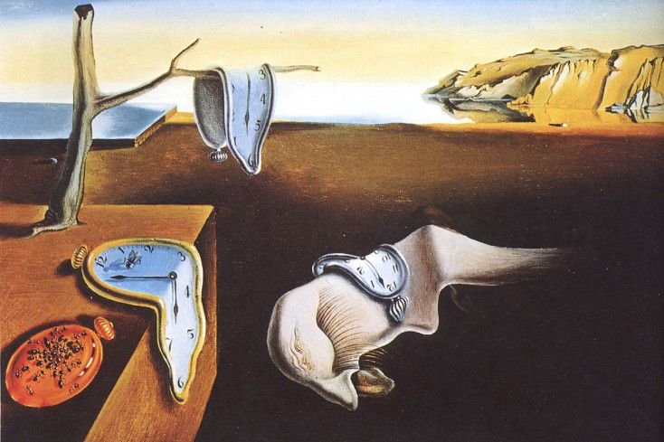
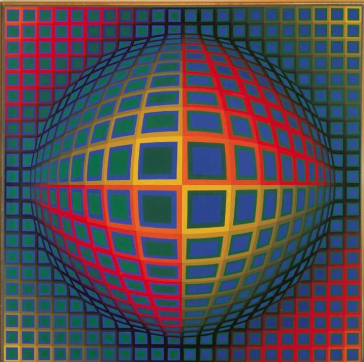
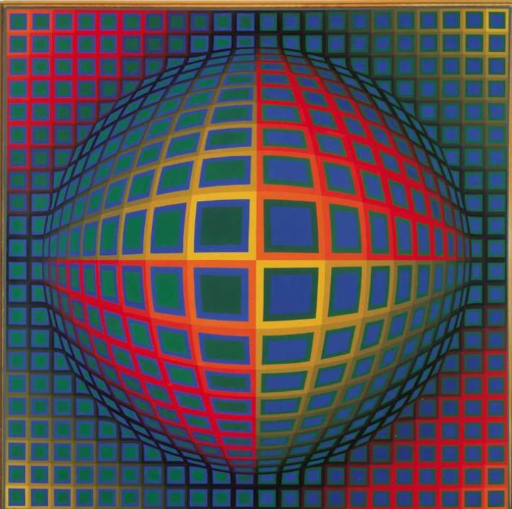

Bemutatkozás:
- Eötvös Loránd Tudományegyetem: Tanárképzés (MA) informatika, család és gyermekvédő tanár
- Eötvös Loránd Tudományegyetem: Programtervező informatikus (BSc), Modellező informatikus szakirány
- Berzsenyi Dániel Evangélikus Gimnázium és Kollégium, Gimnáziumi érettségi
6 éve tanítok az iskolában. Az ottohonomhoz közel helyezkedik el, a XI. kerületben élek kényelmes a bejárás. Nagyon szimpatikus, hogy az iskolát a Szalézi rend tartja fent, így az oktatási körülmények biztosítottak, bármikor kaphatok lelki támogatást. A táni kar motivált, így én is motiváltabb vagyok. Az iskola lehetőséget ad szakmai projektkhez csatlakozni, illetve támogatja a továbbképzéseket.
Kiemelten éredklődöm:
- a robot programozás
- elektronika
- mesterséges inteligencia területén
Személyes információk
Budapesten élek, a XI. kerületben. Szeretem a kevés szabadidőmet aktívan eltölteni. festéssel, olvasással, főzéssel, társasozással.
Kedvenc csokim: mogyorós milka
Kedvenc koktélom: Pina Colada
Kedvenc állatom: kutya
Kedvenc képeim
 
